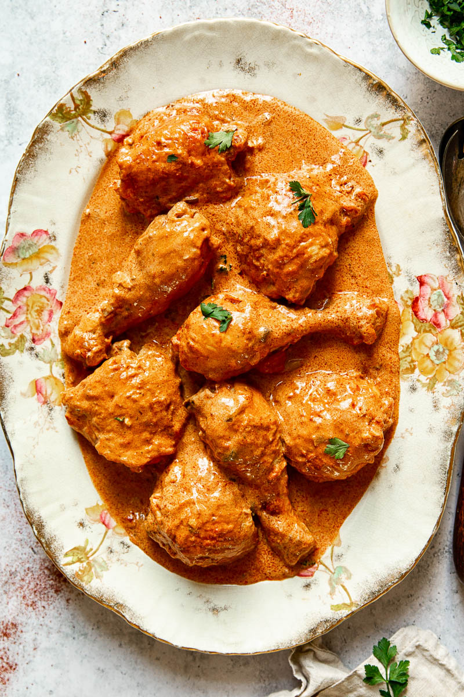

Chicken Paprikash Recipe

Description
A classic Chicken Paprikash recipe with chicken sautéed in creamy paprika sauce until meltingly tender.
Ingredients
- 1 tbsp olive oil extra virgin
- 900 g /2 lbs chicken thighs and legs
- 1 onion chopped
- 3 cloves garlic
- 2 tbsp sweet paprika
- 2 tbsp flour
- 400 ml /1 ½ cups chicken stock
- 400 g /14 oz tinned chopped tomatoes (crushed tomatoes in the US and Canada)
- 250 ml /1 cup sour cream (full fat)
- Salt and pepper
Steps
- In a large pan heat 1 tbsp of olive oil and brown seasoned with salt and pepper chicken parts over medium-high heat until golden but not cooked all the way through. Remove to a plate and set aside. Discard most of the chicken fat but 2 tbsp.
- To the same pan add chopped onion and cook over low heat for 5-7 minutes without browning it, then add garlic and briefly cook for about 30 seconds while stirring. Then add paprika and flour, stir to combine until you have a paste. Slowly add the chicken stock while stirring to avoid lumps, then add the canned tomatoes, turn the heat up and bring to a boil. Once boiled return the chicken with its juices back to the pan, cover with a lid, lower the heat and simmer for 40-45 minutes. Stir occasionally to prevent from burning.
- At the end of cooking time, stir in sour cream and take it off the heat. Serve sprinkled with some fresh parsley.
Link to original recipe